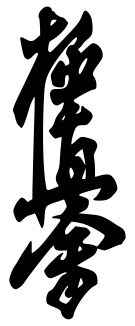

Kyokushin (極真)[a] is a style of karate originating in Japan. It is a full-contact style of stand-up fighting and is rooted in a philosophy of self-improvement, discipline, and hard training.[5][6][7][8] Kyokushin Kaikan is the martial arts organization founded in 1964 by Korean-Japanese Masutatsu Oyama (大山倍達, Ōyama Masutatsu), officially the International Karate Organization. Previously, this institution was known as the Oyama Dojo. Since 1964, the style has continued to spread to more than 120 countries, becoming one of the largest martial arts organizations in the world, and in Japan itself.[9][additional citation(s) needed]
